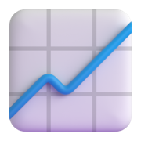
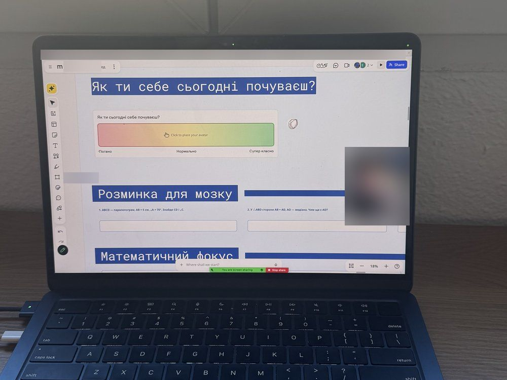
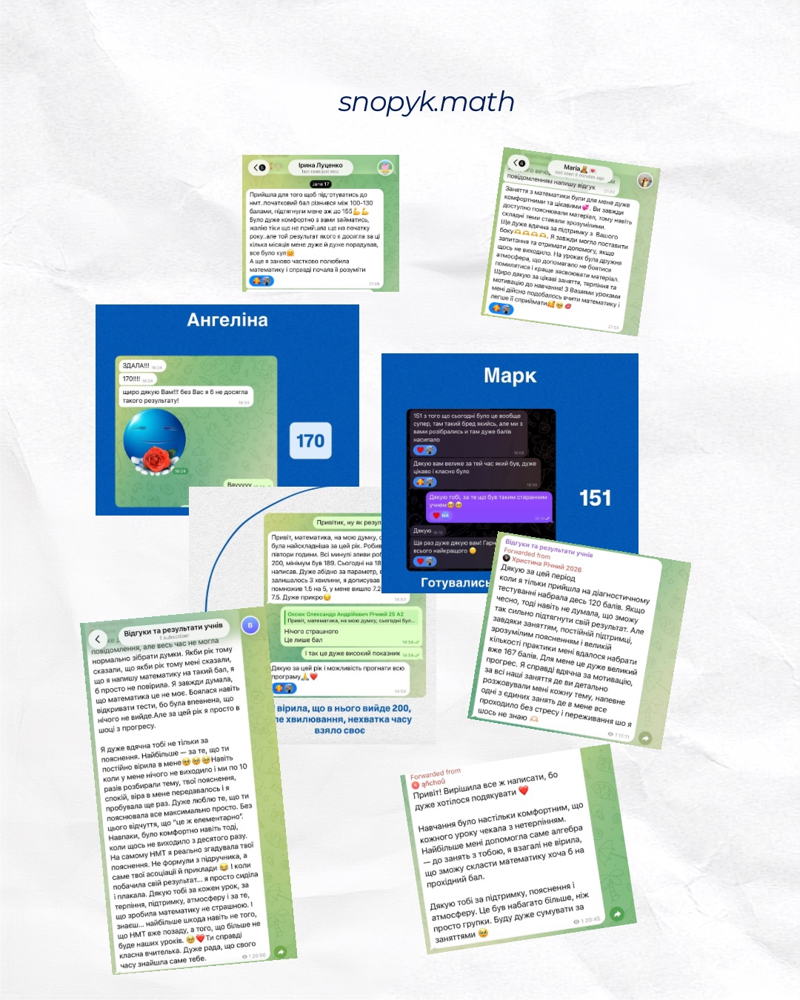

Підготовка до НМТ
10–11 клас. Повторюємо всю програму за планом, розбираємо типові завдання і тренуємось на час — щоб у день тесту не було сюрпризів.
Детальніше про підготовку до НМТ →Онлайн-школа математики · 5–11 клас · НМТ
Знайдемо, де саме прогалини, закриємо їх і підготуємо до НМТ — спокійно, без сліз над домашкою. Ви бачитимете прогрес у щомісячних звітах, а не лише в оцінках.
Для учнів 5–11 класів · онлайн з будь-якої країни
Впізнаєте себе?
«Сидимо над домашкою до ночі, а закінчується все сльозами й сваркою»
«Оцінки падають, а я сама не розумію, як зараз пояснюють за НУШ»
«До НМТ лишився рік, а від балу залежить, чи буде бюджет»
«Вже платили репетитору, а що змінилось — незрозуміло»
«Через тривоги й дистанційку пропущено цілі теми — і далі все сиплеться»
«Живемо за кордоном: дитина між двома програмами й двома мовами»
Це нормально, і це можна виправити. Головне — знайти, з якого місця почались прогалини, а не просто «робити домашку разом».
Що зміниться

Як це працює
Нічого не відбувається «за кадром»: ви знаєте, що ми робимо, навіщо і що вже вийшло.
Крок 1
45–55 хв онлайн, 300 грн. Знайомимось, робимо короткий тест і знаходимо, де саме прогалини. Того ж дня ви отримуєте висновки й рекомендації.
Перший урок — з викладачем, якого ми підібрали саме під дитину.
На уроці ми нічого не продаємо — продовжувати чи ні, вирішуєте ви.
Крок 2
Викладач розписує, чого і до коли досягаємо, які теми головні зараз і що повторити з минулих класів.
Після діагностики викладач розписує план навчання під вашу мету — школа, НМТ чи іноземна програма:
Щомісяця звіряємось із планом у звіті й за потреби коригуємо. Викладача підбираємо під клас, тему, характер дитини і ваш розклад, а якщо не підійшов — замінимо без зайвих питань.
З 7 до 10 з алгебри — до кінця семестру (грудень).
Дроби і дії з від'ємними числами (6 клас) — без них рівняння «не йдуть».
Лінійні рівняння і задачі на складання рівнянь.
2 заняття на тиждень по 55 хв.
Крок 3
Індивідуально, у парі чи в міні-групі. Домашні, записи уроків і всі матеріали — на навчальній платформі.
Індивідуально, у парі або в міні-групі. Пояснюємо так, щоб дійшло, — і стільки разів, скільки треба.
Домашні завдання, записи уроків і всі матеріали зберігаються на платформі, доступ до якої ви отримуєте після старту. Пропустили урок чи забули тему — можна будь-коли переглянути пояснення ще раз.

Крок 4
Щомісяця в Telegram: що пройшли, що вже виходить, над чим працюємо і скільки домашніх здано.
Не треба вгадувати за оцінками, що відбувається на уроках. Наприкінці кожного місяця викладач надсилає вам у Telegram короткий звіт:
Будь-яке питання між звітами — напишіть менеджеру в Telegram.
Квадратні корені та їх властивості. Геометрія — теорема Піфагора.
Впевнено спрощує вирази з коренями — на самостійній 10 з 12 без підказок.
Задачі, де прямокутний трикутник треба побачити самому. Додаємо по 2 такі задачі в кожне ДЗ.
Квадратні рівняння + повторюємо дроби перед контрольною.
Оберіть свою ситуацію
10–11 клас. Повторюємо всю програму за планом, розбираємо типові завдання і тренуємось на час — щоб у день тесту не було сюрпризів.
Детальніше про підготовку до НМТ →5–11 клас. Закриваємо прогалини, пояснюємо поточні теми і допомагаємо з контрольними, Інтелектом України та олімпіадами.
Пояснюємо українською математику за програмою країни, де навчається дитина, — і за потреби паралельно тримаємо українську програму.
Математична секція SAT, Matura, IB та інші: стратегії розв'язання, типові задачі, робота на час.
Хто викладає
Я математик за освітою і викладаю вже 9 років. За цей час через мої уроки пройшли понад 150 учнів — хтось готувався до НМТ, хтось закривав прогалини зі школи, хтось навчався за кордоном. Я знаю, як пояснити тему так, щоб дійшло навіть тим, хто впевнений, що «математика — це не моє».
Результати учнів
Реальні бали наших учнів — і що вони самі про це написали.
«Всі минулі зливи робив на 200, мінімум був 189. Сьогодні на 184 написав… Дякую за цей рік і можливість прогнати всю програму 🙏❤️»
Викладачка: «Я вірила, що в нього вийде 200, але хвилювання і нестача часу взяли своє. І так це дуже високий показник».
«Якщо чесно, тоді навіть не думала, що зможу так сильно підтягнути свій результат».
«Добрий день, на 148 здала 🎉🎉»
«А ще я заново частково полюбила математику і справді почала її розуміти».
«ЗДАЛА!!! 170!!!! Щиро дякую Вам!!! Без Вас я б не досягла такого результату!»
«Дякую вам велике за той час, який був, — дуже цікаво і класно було».
Повідомлення з наших чатів — як їх написали, лише скорочено.
Якби рік тому мені сказали, що я напишу математику на такий бал, я б просто не повірила.
Я завжди думала, що математика це не моє. Боялася навіть відкривати тести, бо була впевнена,
що нічого не вийде. Але за цей рік я просто в шоці з прогресу.
На самому НМТ я реально згадувала твої пояснення. Не формули з підручника, а саме твої
асоціації й приклади 😂
До речі, я пішла в школу в Англії, і боже, як я була вдячна за ваші уроки 😅. Бо я справді була найрозумнішою в класі ахах. Вони дискримінант розглядають тільки в універі… Типу, мені дали вищу математику, бо на звичайній вони буквально вивчають дроби
з вами легко)
я думала логарифми і ці показникові рівняння ніколи не зрозумію
а тут бац — майже на максимум
Заняття з математики були для мене дуже комфортними та цікавими 💞. Ви завжди доступно
пояснювали матеріал, тому навіть складні теми ставали зрозумілими.
На уроках була дружня атмосфера, що допомагало не боятися помилятися і краще засвоювати матеріал.
Дуже подобалась атмосфера на заняттях, було дуже комфортно задавати навіть дурні питання
(якщо чесно 😂). Подобалась подача матеріалу і наочна візуалізація теми.
Більше за все подобалось, що з вами не страшно було помилятись і запитувати дурні речі,
бо в цьому ж і полягає суть навчання, да? ахах
Навчання було настільки комфортним, що кожного уроку чекала з нетерпінням. Найбільше мені
допомогла саме алгебра — до занять з тобою я взагалі не вірила, що зможу скласти математику
хоча б на прохідний бал.
Це був набагато більше, ніж просто групки ❤️
Я вам дуже вдячна за вашу роботу з Олексієм, за те що виділили час, тому що хотіли саме з вами займатись, дуже довго підбирали репетиторів 😵💫 Він майже ні з ким не йде на контакт) З вами займається з захватом, у вас дар)
Ой супер, я дуже рада, що ви погодились, Саші теж було комфортно) Ви за такий короткий час змогли визначити його слабкі місця, і ще й так влучно — я розумію, про що ви говорите.
Дуже дякую за такий детальний фідбек, Саші теж подобається заняття, сподіваюсь, так буде все й надалі

Безкоштовний тест · 2 хвилини
5 запитань за шкільною програмою 7–11 класу. Одразу побачите результат і що варто підтягнути.
Ціни
Урок триває 55 хвилин. Обирайте формат, а розклад і кількість занять підкажемо після діагностики, коли побачимо рівень і мету.
від 550 грн / урок
Лише учень і викладач. Темп і пояснення повністю під дитину.
від 450 грн / урок
Удвох з другом чи однокласником — разом веселіше і дешевше. Ціна за одного учня.
від 300 грн / урок
До 6 учнів з однаковою метою. Найдоступніший формат. Ціна за одного учня.
Ціни — для української шкільної програми та підготовки до НМТ. Математика за іноземною програмою та SAT — вартість за запитом.
FAQ
Не знайшли відповідь? Напишіть нам у Telegram або Instagram — відповімо особисто.
Написати в TelegramЧасто небажання — це страх і відчуття «я все одно не зрозумію». На діагностиці дитина знайомиться з викладачем спокійно, без оцінок і тиску. Якщо контакт не складеться — підберемо іншого викладача.
Так. Працюємо на спільній інтерактивній дошці: викладач бачить хід розв'язку в реальному часі, а всі матеріали зберігаються. Плюс не треба нікуди їхати — заняття можна провести навіть з іншої країни.
Залежить від того, скільки прогалин і яка мета. Після діагностики ви отримаєте план із термінами, а прогрес бачитимете у звітах — без «чекайте до кінця року».
Ми надсилаємо батькам звіти: що пройшли, що вже виходить і над чим працюємо далі. Будь-яке питання можна поставити менеджеру в Telegram.
Так. Важливо, щоб дитині було комфортно, — тому якщо викладач не підійшов, ми підберемо іншого.
Це перше заняття онлайн, індивідуально з викладачем. Визначаємо поточний рівень, знаходимо прогалини, обговорюємо мету і формуємо план подальших занять. Після неї ви самі вирішуєте, чи продовжувати.
Заняття триває 55 хвилин. Формат обираєте самі — індивідуально, у парі з другом чи однокласником або в міні-групі.
Так. Пояснюємо українською математику за програмою країни, де навчається дитина, і готуємо до SAT, Matura та інших міжнародних іспитів.
Індивідуальний урок — від 550 грн, у парі — від 450 грн, у міні-групі — від 300 грн з учня. Математика за іноземною програмою та SAT — за окремим прайсом. Формат допоможемо обрати після діагностики.
Залиште заявку на сайті або напишіть нам у Telegram чи Instagram — ми зв'яжемось, щоб узгодити зручний час діагностики.
Запис на діагностику
Підберемо зручний час для діагностики — першого уроку, на якому визначимо рівень і складемо план.